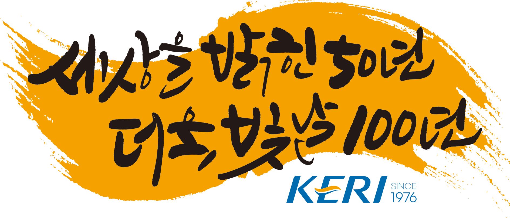

본문 바로가기
온라인역사관
인사말
키워드로 보는 KERI 50년
영상으로 보는 KERI 50년
역사서 바로보기
360° 역사관
KERI 대표 홈페이지
(새 창)
×
인사말
50th Anniversary Message
키워드로 보는 KERI 50년
KERI 50 Years in Keywords
영상으로 보는 KERI 50년
준비 중
KERI 50 Years in Video
역사서 바로보기
KERI History Books
360° 역사관
11월 말 공개
KERI History Hall 360°
KERI 대표 홈페이지
(새 창)
KERI 50th Anniversary · Since 1976

한국전기연구원 창립 50주년 온라인역사관
메뉴 보기
01
인사말
50th Anniversary Message
바로가기
02
키워드로 보는
KERI 50년
KERI 50 Years in Keywords
바로가기
03
영상으로 보는
KERI 50년
KERI 50 Years in Video
바로가기
04
역사서 바로보기
KERI History Books
바로가기
05
360° 역사관
KERI History Hall 360°
11월 말 공개